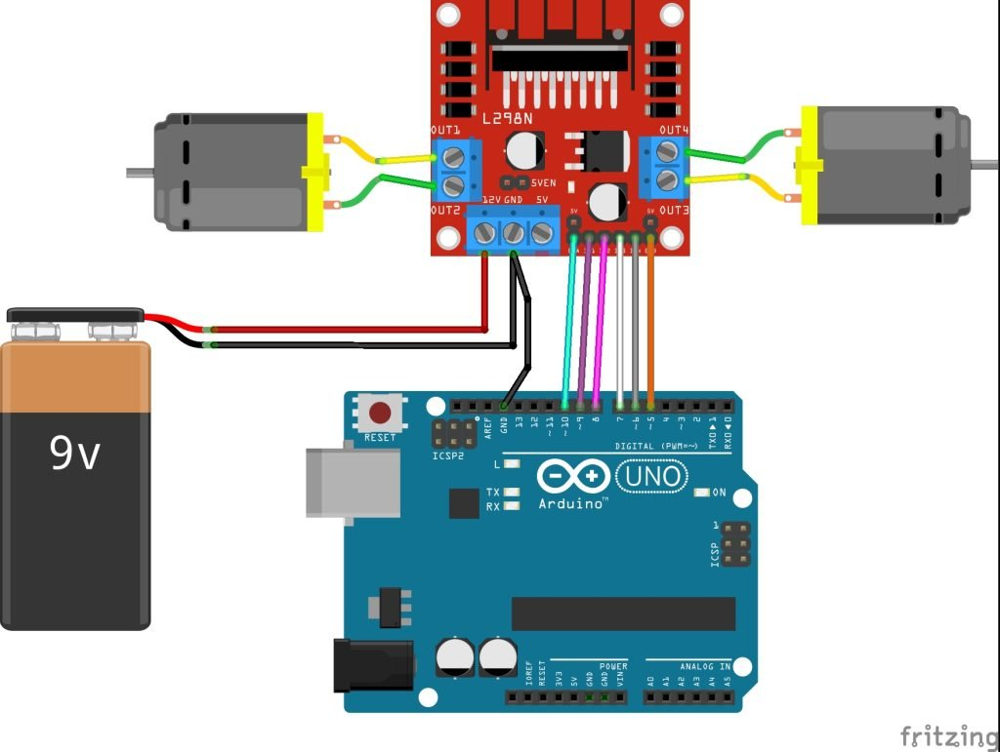

 <!doctype html>
<html>

<head>
<link rel="icon" href="pagina inzana.ico" />

<title>ARMADO</title>
</head>
<body background-COLOR="WHITE">
<header>

</header>

<nav>

<aside id="a">
<font face="bell mt", courier "helvetica" color="#000000" size="3"></p>
<a href="INDEX.html" tang="_black">PRINCIPAL</a>
</aside>

</nav>

<main>

<aside id="left">
<BR></BR>

<hr>
<li><font face="arial", courier "helvetica" color="#000000" size="3" >Para empezar tienes que poner todo en su lugar como el arduino y conectarle los motores,esto encima de la base que compraste o que te vino en el kit este proceso es relativamnete facil pues es solo elegir la pocision que desees colocar los motores y el arduino</li>
    <li><font face="arial", courier "helvetica" color="#000000" size="3" >Este siguiente paso es algo tedioso, pues tiene que conectar varios cables del puente H a la placa arduino,se tiene que conectar en los pines 3,4,6 o 7,puedes elegir , o puedes conectarlo como esta en el esquema siguiente el cual es mas facil de entender que mi palabrerio:</li>
        <font face="arial", courier "helvetica" color="#000000" size="3" >Tienes que tener un cuidado con las conexiones, conectar algo de mala forma podria quemar la placa arduino, el puente H o los motores, hay que prestar atencion a sus conexiones

            <li><font face="arial", courier "helvetica" color="#000000" size="3" >Una vez conectado, tienes que crear o copiar un codigo para hacer que los motores se muevan,hay videos de como hacer que las llantas se muevan, desafortunadamente no puedo dejarte el mio, no lo tengo y alguien de otro equipo podria revisarlo tambien </li>
                <li><font face="arial", courier "helvetica" color="#000000" size="3" >Para insertar el codigo a la placa arduino, tendras que usar la aplicacion de arduino y aqui poner el codigo que buscaste,cuando ya tengas el codigo listo tendras que usar este cable para enviar la informacion a la placa,si te sale error o algun aviso,talves sea por algo, busca "Herramientas" en la parte superior de la aplicacion,buscas el apartado "Placas" y seleccionas la que se llame "Arduino Uno",ahora si usas este cable:</li>
                    
                    <li><font face="arial", courier "helvetica" color="#000000" size="3" >Si ves que todas las luces de la placa se encendieron y se apagaron es porque el codigo ya esta en la placa o si tienes ya todo conectado con los motores y demas, notaras que las ruedas se moveran,el cual es un exito</li>
                        <li><font face="arial", courier "helvetica" color="#000000" size="3" >Despues sigue el tema de los sensores, aqui no puedo decirte mucho al respecto pues la placa que nosotros usamos,la conexion de los sensores es diferente, pero si puedo decirte parcialmente su funcionalidal. El sensor nos permitira que en una pista no nos salgamos de lo establecido el cual es una cinta de color negro en el suelo,digamos que el carrito acelerara hasta encontrarse con una curva,entonces el sensor de la izquiera detectara que hay color negro, lo que hara que las llantas izquierdas dejen de acelerar y las llanatas derechas queden encendidas,dando resultado un giro a la izquiera,y viceversa con el giro derecho,ademas los sensores permiten corregir continuamente la aceleracion,hay que tener especial consideracion con el codigo del sensor,si el acarrito llegara a salir estarias descalificado </li>


</hr>


</body>
</html>